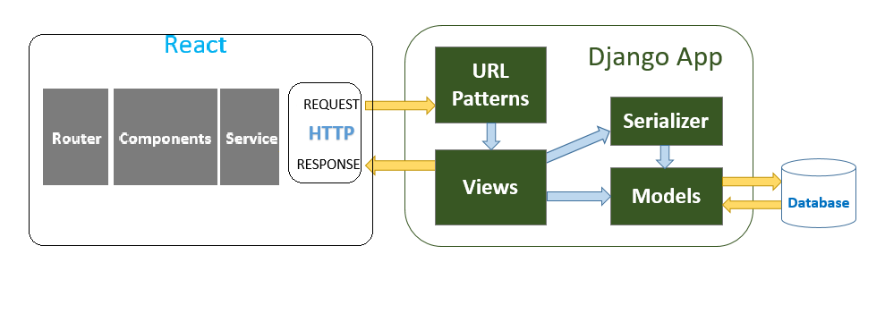
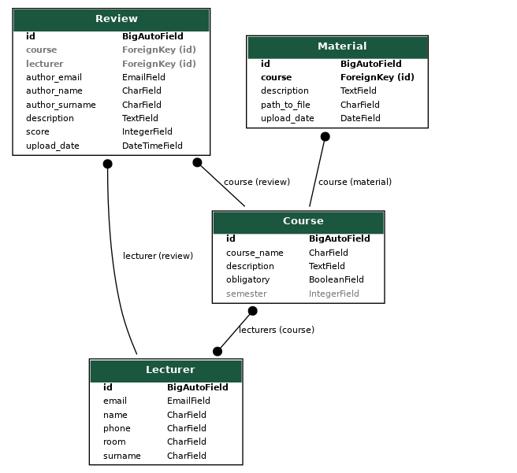
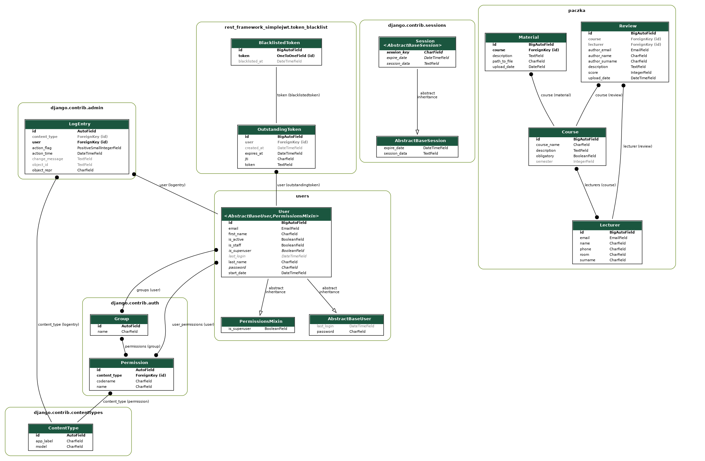

Dokumentacja deweloperska
Zakres Realizacji
- Prowadzenie bazy użytkowników(Obejmuje sprawy związane z Autentykacją oraz modyfikacją uprawnień użytkownika) - ZREALIZOWANO
Rejestracja klienta(Zakładanie nowego konta poprzez podanie loginu, hasła, adresu e-mail oraz roku studiów) -
nie uwzględnia roku studiów.Logowanie klienta(Logowanie użytkownika do systemu) - ZREALIZOWANO
Przypomnienie hasła(Link resetujący hasło wysłany na podany email) -
NIE ZREALIZOWANOModyfikacja danych klienta(Modyfikacja aktualnego roku studiów, robiona automatycznie po zakończeniu semestru lub ręcznie przez administratora serwisu) -
NIE ZAIMPLEMENTOWANO INFORMACJI O ROKU STUDIÓWModyfikacja uprawnień klienta(Nadawanie użytkownikowi praw administratora, przez istniejącego już administratora) - ZREALIZOWANO
Obsługa bazy przedmiotów(Obejmuje możliwość aktualizacji danych o przedmiotach oraz pozwala na ich odczytanie) - ZREALIZOWANO
- Obsługa bazy przedmiotów(Dodawanie lub usuwanie przedmiotów realizowanych na wydziale, realizowane jest przez administratora) - ZREALIZOWANO
Dodanie komentarza o przedmiocie(Zapisanie do systemu opinii na temat przedmiotu) - ZREALIZOWANO
Zmiana lub likwidacja komentarza(Możliwość usuwania swoich komentarzy przez użytkownika lub administratora serwisu) -
Jedynie przez administratora.Dodanie oceny o przedmiocie(Polega na wystawieniu oceny dla danego przedmiotu w skali od 1-10) - ZREALIZOWANO
Przesyłanie plików związanych z przedmiotem(Możliwość przesłania notatek z wykładów, treści egzaminów z poprzednich lat oraz zadań robionych na ćwiczeniach-do tej operacji wymagany jest odpowiedni rok studiów) -
NIE ZREALIZOWANO.Zapoznanie się z informacjami o przedmiocie(Przegląd obecnych informacji na temat przedmiotu, czyli oceny oraz opinii dla wszystkich użytkowników) - ZREALIZOWANO
Pobieranie materiałów do przedmiotu - ZREALIZOWANO
- Obsługa bazy prowadzących(Pozwala na zapis oraz odczyt danych o profesorach prowadzących przedmioty na wydziale FiIS) - ZREALIZOWANO
Modyfikacja listy prowadzących(Zmiana listy prowadzących w bazie danych, realizowane jest przez administratora) - ZREALIZOWANO
Zapis komentarza o prowadzącym( Dodanie opinii na temat prowadzącego do systemu) - ZREALIZOWANO
Zmiana lub likwidacja komentarza(Możliwość usuwania swoich komentarzy przez użytkownika lub administratora) -
NIE ZREALIZOWANO.Dodanie oceny o prowadzącym(Pozwala na ocenienie prowadzącego w skali od 1-10) - ZREALIZOWANO
Architektura
Diagram ERD
Paczka ERD
Django ERD
Wybrane narzędzia i języki programowania
Python - Django
React.js
Rozwiązania zastosowane w produkcie
Struktura aplikacji
Frontend aplikacji napisano w języku React.js. Komunikacja z bazą danych następuje poprzez wysyłanie zapytań do RESTowego API napisanego w Django (Django REST framework). Zastosowana baza danych to SQLite.
Dostęp do aplikacji
Dostęp do aplikacji uzyskują jedynie użytkownicy posiadający adresy email w domenie @student.agh.edu.pl. W trakcie rejestracji na podany mail wysyłany jest kod dostępu, konto jest aktywowane po wpisaniu otrzymanego kodu.
Opis API
API dostępne jest pod następującym linkiem: API.
Lista endpoint-ów:
/token/ - zwraca token sesyjny potrzebny do logowania/rejestracji
/token/refresh/ - odświeża token sesyjny
/user/register/ - założenie konta użytkownika
/user/credentials/ - zwraca dane zalogowanego użytkownika
/user/logout/blacklist/ - dodaje token wylogowanego użytkownika do czarnej listy
/paczka/lecturers/ - zwraca listę prowadzących
/paczka/lecturer/ - zwraca prowadzącego o konkretnym id
/paczka/courses/ - zwraca listę przedmiotów
/paczka/course/ - zwraca przedmiot o konkretnym id
/paczka/reviews/ - zwraca listę opinii
/paczka/review/ - zwraca opinię o konkretnym id
/paczka/add_review/ - dodaje opinię do bazy
/paczka/materials/ - zwraca listę materiałów
/paczka/material/ - zwraca materiał o konkretnym id
Pomysły Ulepszeń
Dodanie forum dla studentów
Dodanie możliwości edytowania i usuwania opinii
Rozszerzenie profilu użytkownika, lista opinii przez niego wystawionych
Kalendarz z datami egzaminów, zaliczeń itp.
Wykorzystane Narzędzia Do Prowadzenia Projektu
Nazwa |
Opis |
|---|---|
Jira |
Kordynowanie i planowanie działań |
Bitbucket + Git |
System Kontroli Wersji |
Visual Studio Code |
Edytor Kodu |
Oracle VM VirtualBox |
Wirtualna Maszyna |